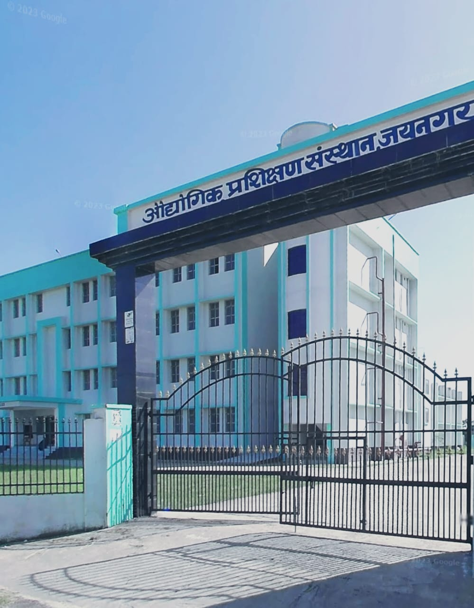
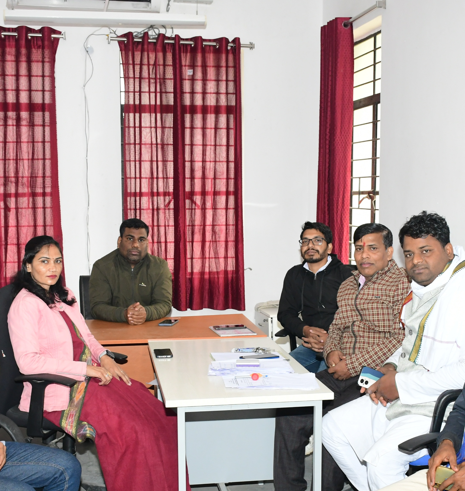
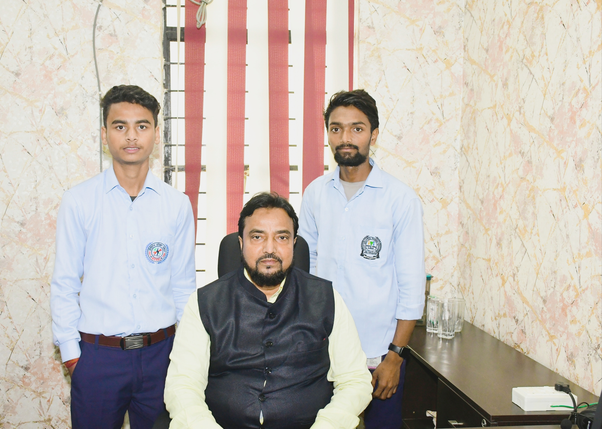
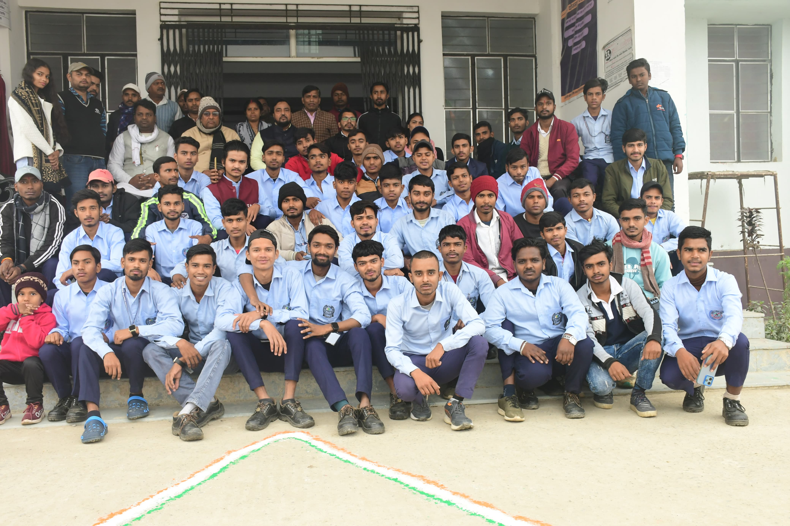

Latest Image
1 / 7

Main gate of Institute
2 / 7

All Instructors Of Govt. iti Jainagar
4 / 7

Principal Office
6 / 7

institute campus
7/ 7

ADMINISTRATIVE BLOCK
❮
❯
Welcome To Government ITI Jainagar
This is a Government Industrial Training Institutes.
It is located in Jainagar Madhubani, Bihar. It has Six Trades.
Govt. ITI Jainagar is located at Village Sidhpa Jainagar, Madhubani
(Bihar), about 11km east of Ladania Block.. It is establised by
Govt. of Bihar during the academic year 2017-22. The College
is a Co-Educational Institute and with fully equipped Labs.
The college library has a good stock of books and journals
on various topics and titles.The college strives to promote
the students in a sense of responsibility for their own
development and an understanding of their obligations as
members of a democratic society. The college faster the
students in desire to learn, the ability to think rationally
and express themselves effectively, the habit of analytical
and reflective thought and an awareness of themselves their
heritage other cultures and their environment.Special classes
are taken to help the weak students and to improve spoken English
and communication skills. The teachers and the taught are encouraged
to take part in many seminars held at the Inter collegiate level. Placement
wing is available and 100% result is assured.The College is approved by
National Council for Vocational Training ( NCVT).